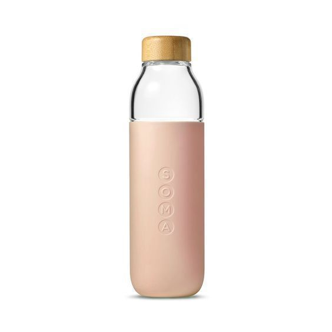
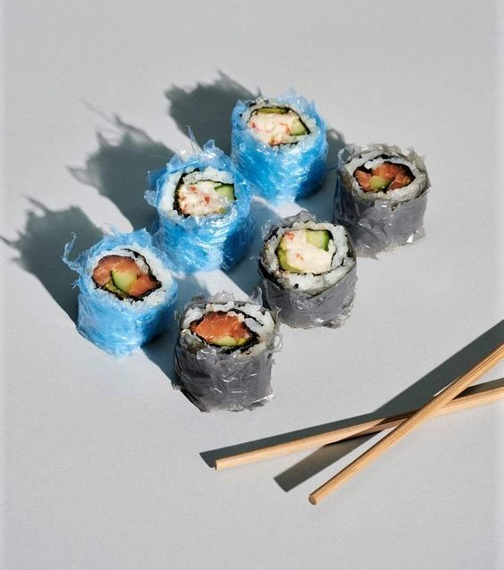

+++
title = "Plastik Çağı: Mikroplastiklere Genel Bakış"
description=""
url="sayi-9/plastik-cagi-mikroplastikler"
aciklama="Teknolojinin gelişmesi, yeni buluşlar ve küreselleşme ile birlikte birçok yenilik hayatımıza girdi. Peki, bu hızlı gelişmeler dünyanın ekosistemini nasıl etkiledi? Hızlı tüketim ve buna katkı sağlayan birçok faktör dünyamıza çevre kirliliği olarak geri döndü. 1950’li yıllarda başlayan plastik kullanımı her alanda kolaylıkla kullanım ve ucuza mal edilme gibi nedenlerle günümüz plastik çağ olarak adlandırılmaya başladı."
type="sayfa"
thumb="/img/tasarim-sozlugu-kolaj-thumbnail.jpg"
date = "2021-05-05"
sayi=["09"]
sayfa="03"
yazar=["elif ersoz"]
tags= ["ana sayfa", "dergi"]
+++

<div class="container">
        <div class="row">
        <div class="col-md-6">   <p>
      Teknolojinin gelişmesi, yeni buluşlar ve küreselleşme ile birlikte birçok
      yenilik hayatımıza girdi. Peki, bu hızlı gelişmeler dünyanın ekosistemini
      nasıl etkiledi? Hızlı tüketim ve buna katkı sağlayan birçok faktör
      dünyamıza çevre kirliliği olarak geri döndü. 1950’li yıllarda başlayan
      plastik kullanımı her alanda kolaylıkla kullanım ve ucuza mal edilme gibi
      nedenlerle günümüz &quot;<strong>plastik çağ</strong>&quot; olarak
      adlandırılmaya başladı. Etrafımıza bir göz atarsak bilgisayardan yazıcıya,
      su şişesinden çantaya, telefona, hatta kaleme kadar pek çok şeyin
      plastikten olduğunu görürüz. Doğada parçalanıp geri dönüşmesi oldukça zor
      olan plastik günümüzün en büyük çevre kirleticilerinden biri olarak
      görülürken, oluşturduğu bir diğer tehdit de içtiğimiz sudan yediğimiz
      yemeğe kadar hemen her şeyde miktarının artması ve besini tüketen
      canlıların organlarına nüfuz edebilmesi.
   </p></div>
        <div class="col-md-6">      {{}}</div>
    </div>


   <h3 id="mikroplastik-nedir">Mikroplastik Nedir?</h3>
       <div class="row">
        <div class="col-md-6">   <p>
      Mikroplastikler 5 mm ile 1 mikrometre arasındaki boyutlarda olan
      plastiklere verilen isimdir. Boyutlarından kaynaklı olarak çıplak gözle
      fark edilmeleri oldukça güçtür. Çoğunlukla daha büyük plastiklerin
      (otomobil lastikleri, tekstil ürünlerindeki mikrofiberler ve plastik
      ambalajlar) çevresel faktörlerden kaynaklı olarak daha küçük parçalara
      ayrılmasıyla oluşurlar. Bunun yanında direkt olarak da
      üretilebilmektedirler. İnsan aktivitesi olsun olmasın, dünya üzerindeki
      neredeyse tüm ekosistemlerde görülen mikroplastikler birincil ve ikincil
      mikroplastikler olarak iki gruba ayrılır: Birincil mikroplastikler:
      kozmetik, kişisel bakım malzemeleri ve aşındırıcıların içinde bulunur.
      Bunun yanında endüstride çeşitli amaçlarla kullanılmak üzere direkt olarak
      da üretilirler. Çoğunlukla kanalizasyon yoluyla arıtma tesislerine, ordan
      da nehirlere karışırlar. İkincil mikroplastikler ise daha büyük
      plastiklerin fiziksel, kimyasal ve biyolojik faktörlerle parçalanması
      sonucu oluşurlar. Oluşumları; tekstil, boya ve lastik gibi ürünlerin
      kullanımı sırasında veya çevreye bırakılmaları sonucunda da
      gerçekleşebilir. Doğada bulunan mikroplastiklerin çoğu ikincil
      mikroplastiklerdir. Hem atık su arıtma tesislerinden hem de direkt olarak
      doğaya bırakılmalarından kaynaklı olarak yoğun kirlilik oluştururlar. Su
      arıtma tesisleri ise mikroplastikleri arıtmada yeterince etkin
      olmadığından tükettiğimiz sularda mikroplastiğin olmaması kaçınılmaz bir
      hal alır.
   </p></div>
        <div class="col-md-6">      {{}}</div>
    </div>

<div class="text-center">
      {{}}
    </div>

   <h3 id="gıdalarda-mikroplastik">Gıdalarda Mikroplastik</h3>
       <div class="row">
        <div class="col-md-6"> <p>
      Yapılan çalışmalara göre sahil kumunda, deniz ürünlerinde, sofra tuzunda,
      karton bardaklarda, biberonda ve son olarak
      <a href="https://www.bbc.com/turkce/haberler-dunya-55412052"
         >plasentada</a
      >
      dahi bulunan, boyutları milimetrenin binde birine kadar küçülebilen
      mikroplastiklerin ambalajlı gıdalarda da bulunduğu bildirildi. Gıdalardaki
      mikroplastik varlığının genellikle hammadde, üretim aşamaları veya
      paketleme sırasında kullanılan plastik ambalaj materyallerinden veya
      ürünün tüketimi esnasında havadan kaynaklanabileceği düşünülmektedir
      (Yurtsever, 2019). Doç. Dr. Sedat Gündoğdu, “Ambalajlı gıdaların tek
      problemi bunlar ambalajlanırken içine karışan mikroplastikler değil.
      Örneğin eve aldığımız bir makarna ya da bakliyat paketini açtığımız zaman
      makasla da açsak elle de yırtsak her türlü yöntemde binlerce mikroplastik
      o gıdanın içine bulaşıyor. Bu mikroplastikleri ayıklamamız neredeyse
      imkansız ve bunlar da bizim vücudumuza karışıyor” şeklinde açıklar. Hal
      böyle iken mikroplastiklerden kaçınmak oldukça zorlaşıyor.
      Mikroplastiklerden kaçınmak için alabileceğimiz bazı önlemlere bakalım.
   </p> {{}}
   </div>
        <div class="col-md-6"> {{}}</div>
    </div>

    
   <p class="text-center">
      {{}}
   </p>

   <p class="text-center">
      {{}}
   </p>
   <h3 id="neler-yapmalıyız">Neler Yapmalıyız?</h3>
       <div class="row">
        <div class="col-md-6">   <p>
      Greenpeace Akdeniz Plastik Proje Sorumlusu 
      <strong>Nihan Temiz Ataş</strong>: “Türkiye’deki deniz canlılarındaki
      plastik kirliliği araştırması, plastik kirliliğin deniz canlıları ve insan
      sağlığı için ne derece endişe verici olduğunu ortaya koyuyor. Daha da
      vahimi, bu mikroplastiklerin çoğunluğunun tek kullanımlık plastiklerin
      üretiminde kullanılan polimer tipteki plastikler olması. Bu sorunun tek
      bir çözümü var, tüketim kültürümüzü değiştirmek. Plastiği yok edemiyoruz,
      kullanıp uzağa atmanın bir çözüm olmadığı ve artık plastiğin
      tabaklarımızda olduğu gerçeğiyle yüzleşmek zorundayız. Atılacak ilk adım,
      alternatifi olan ve AB’de de yasaklanan tek kullanımlık ürünlerin
      Türkiye’de de yasaklanması olmalı. Üç tarafı plastikle değil denizlerle
      çevrili bir Türkiye için bunu yapmalıyız.”
   </p></div>
        <div class="col-md-6">      {{}}</div>
    </div>

    <div class="row">
        <div class="col-md-6">   <p>
      Birçok gelişmiş ülke plastik atıklarını diğer ülkelere ihraç etmektedir.
      Türkiye&#39;nin plastik atık ithalatı 2016 yılı başında ayda 4.000 ton
      iken 2018 başında aylık 33.000 tona, 2019’da ise 48.500 tona çıktı. Oluşan
      plastik atıkların yönetiminin üretici ülkeler tarafından planlanmaması ve
      geri dönüşüm için yeterli çalışmaların yapılmaması nedeniyle bu atıklar
      sorun olmakta. Yasaklanamayan ve kontrolsüzce devam eden plastik
      üretiminin önüne geçmenin öncelikli koşulu tek kullanımlık plastiklerin
      yasaklanması ve ardından üretilmekte olan diğer plastik türleri için
      sağlam bir geri dönüşüm planlaması yapmaktır. Plastik ambalaj atıklarından
      yapı malzemesi üretimi gibi alternatif geri dönüşüm yolları da mevcut.
   </p></div>
        <div class="col-md-6">      {{}}</div>
    </div>

   <p>
      Bireyler olarak bizim de gözden geçirebileceğimiz bazı alışkanlıklarla tek
      kullanımlık plastiklerin tüketimini azaltmamız mümkün. Buna market alış
      verişlerimizdeki poşetlerle başlayabiliriz. Alternatif olarak file veya
      bez çantalar kullanılabilir. Sipariş verdiğimiz yemeklerde plastik çatal
      bıçak koymamalarını talep etmek de küçük ama uzun vadede etkili önlemler
      arasında. Tekstil alanında ise polyester ve naylon gibi hava almayan
      tekstil ürünleri yerine pamuk ve keten ürünleri tercih edilebilir, böylece
      kıyafetler yıkandığında suyla beraber kumaşlardan çıkan mikroplastiklerin
      atık sulara karışması önlenmiş olur. Plastik şişelere alternatif olarak da
      cam şişeler kullanılabilir. Tüketim alışkanlıklarımızı
      değiştirebileceğimiz bu gibi örnekleri çoğaltmak mümkün. Sırada ise
      mesleki sorumluluklar var.
   </p>
    <div class="row">
        <div class="col-md-4">{{}}</div>
        <div class="col-md-4"> {{}}</div>
        <div class="col-md-4">{{}}</div>
    </div>


        <div class="row">
        <div class="col-md-4">   <p>
      Harap olan ekosistemlerin yenilenmesi için uzun bir sürece ve çabaya
      ihtiyaç var. O yüzden yaşadığımız ekosistemi ve çevreyi korumak adına
      kararlı politikalar uygulamak ve çevre dostu tasarımlar yapmak gerek.
      Plastiğin en çok kullanıldığı yerlerden biri olan ambalajlarda plastik
      yerine sürdürülebilir ve geri dönüştürülebilir malzemeler kullanmak, biz
      tasarımcıların sorumluluklarından biridir.
   </p>     {{}}</div>
        <div class="col-md-4">{{}}   <p>
      Kullanıcıların, günümüzde farkındalık kazanmaya devam eden çevre dostu
      tasarımlara olan ilgisi ve talebi artıyor. Bu durum markaların da arz
      talep dengesiyle çevre dostu ürünlerin üretimini artırmasını beraberinde
      getiriyor. İyi bir tasarım çevreye duyarlılığıyla hedef kitlesini, hatta
      zamanla o kitlenin dışını da etkilemeye başlıyor. Böylesi önemli bir görev
      hem sürdürülebilir ürün ve ambalaj tasarımı için ürün tasarımcılarını, hem
      de &quot;sürdürülebilir moda&quot; kapsamında moda tasarımcılarını
      doğrudan ilgilendiriyor. Bu içerik, ilerleyen zamanlarda plastikten
      arınmış çevre dostu tasarımları daha çok görmek adına tasarımcı
      meslektaşlara farkındalık kazandırmak amacıyla hazırlandı.
   </p></div>
        <div class="col-md-4">      {{}}      {{}}</div>
    </div>
    <div class="row mt-5">
        <div class="col-md-6">  
            
            <div class="embed-responsive embed-responsive-16by9">
                <iframe class="embed-responsive-item" src="https://www.youtube.com/embed/oeBUD2aU_7Q" allowfullscreen></iframe>
            </div>
</div>
        <div class="col-md-6">
            <div class="embed-responsive embed-responsive-16by9">
                <iframe class="embed-responsive-item" src="https://www.youtube.com/embed/6uNvruL-iZ0" allowfullscreen></iframe>
            </div>
</div>
    </div>

    <br><br><br>

   <button
   class="btn markutbtn"
   data-target="#my-collapse"
   data-toggle="collapse"
   aria-expanded="false"
   aria-controls="my-collapse"
   >
   Kaynaklar
   </button>
   <div id="my-collapse" class="collapse">
   <pre> <small><code>  

    Yazı Kaynakları

    - https://www.sozcu.com.tr/2021/saglik/paketli-gidalarda-mikroplastik-tehlikesi-6196075/

    - https://www.yesilist.com/tek-kullanimlik-plastik-tuketimini-azaltmak-icin-4-alternatif-yol/
    
    - https://www.mediaclick.com.tr/tr/blog/mikroplastik-ve-mikroplastik-kirliligi-nedir
    
    - https://www.greenpeace.org/turkey/basin-bultenleri/incelenen-iki-baliktan-birinde-mikroplastik-bulundu/#:~:text=Yapılan incelemede%2C her 10 karidesten,63 adet mikroplastik tespit edildi.
    
    - https://www.yesilist.com/tek-kullanimlik-plastik-tuketimini-azaltmak-icin-4-alternatif-yol/
    
    - https://www.sozcu.com.tr/2021/saglik/paketli-gidalarda-mikroplastik-tehlikesi-6196075/
    
    - https://www.mediaclick.com.tr/tr/blog/mikroplastik-ve-mikroplastik-kirliligi-nedir
    
    - https://tr.wikipedia.org/wiki/Mikroplastikler
    
    - https://mikroplastik.org/mikroplastik-nedir/


    Görseller

    - https://www.greenify-me.com/2021/02/6-ways-to-avoid-microplastics.html
    
    - https://www.thesourcemagazine.org/who-microplastic-update-calls-for-health-impact-research/
    
    - https://blog.covance.com/wp-content/uploads/2020/07/MicroplasticsBlogImage-1020x600.jpg
    
    - https://www.dezeen.com/2020/03/10/sweet-sneak-studio-microplastic-photo-series/
    
    - https://yandex.com.tr/gorsel/search?from=tabbar&text=microplastic&p=1&pos=72&rpt=simage&img_url=https%3A%2F%2Fwww.edenproject.com%2Fsites%2Fdefault%2Ffiles%2Fbioaccumulation.gif
    
    - https://marinelife.org/2020/08/09/plastic/
    
    - https://nextnature.net/story/2016/danger-plastic-sea
    
    - https://go.skimresources.com/?id=100465X1570652&xs=1&url=https://www.gettyimages.com/detail/photo/plastic-bottles-for-recycle-royalty-free-image/1128516458
    
    - https://cdn.shopify.com/s/files/1/0616/2697/products/natural-linen-scarf-4.jpg?v=1499621704
    
    - http://www.murlifestyle.com/
    
    - https://www.bloomingdales.com/shop/product/soma-water-bottle?ID=1835126
    
    - https://www.praguemorning.cz/wp-content/uploads/2020/07/s-o-c-i-a-l-c-u-t-7QjF0V8NOms-unsplash-scaled-1-1024x728.jpg
    
    - https://www.wearthlondon.com/zero-waste-gift-set
    
    - https://www.talkingcity.org/wp-content/uploads/takeaway-packaging.jpeg
     </code></small></pre>
   </div>
</div>
